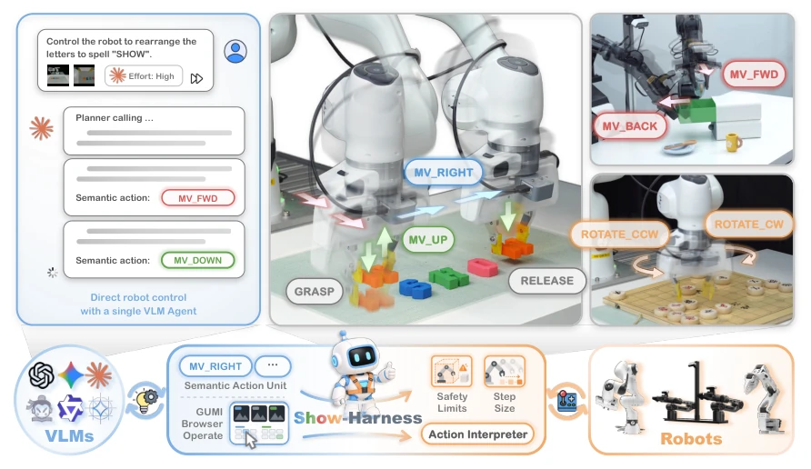
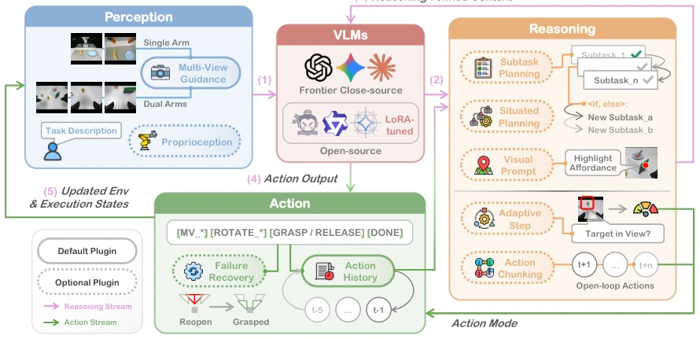
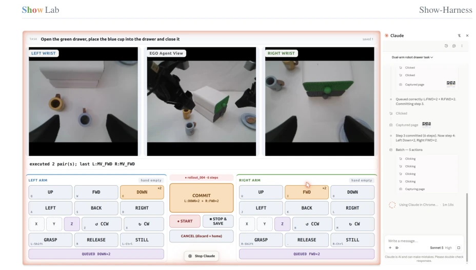
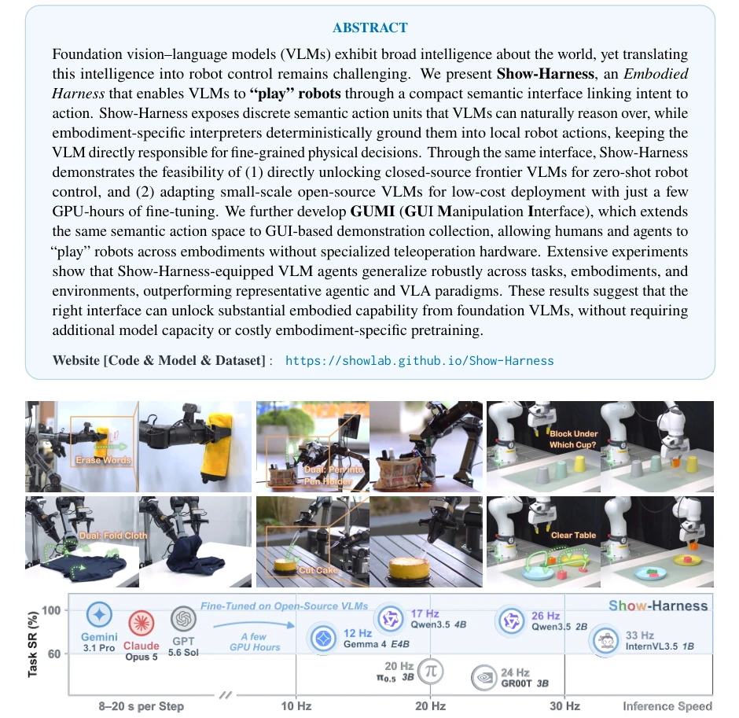
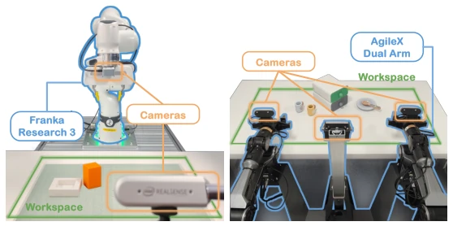
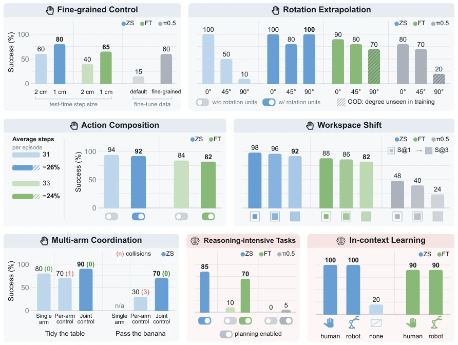
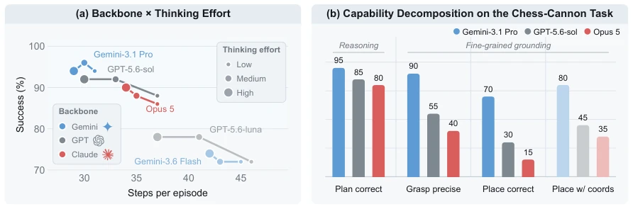
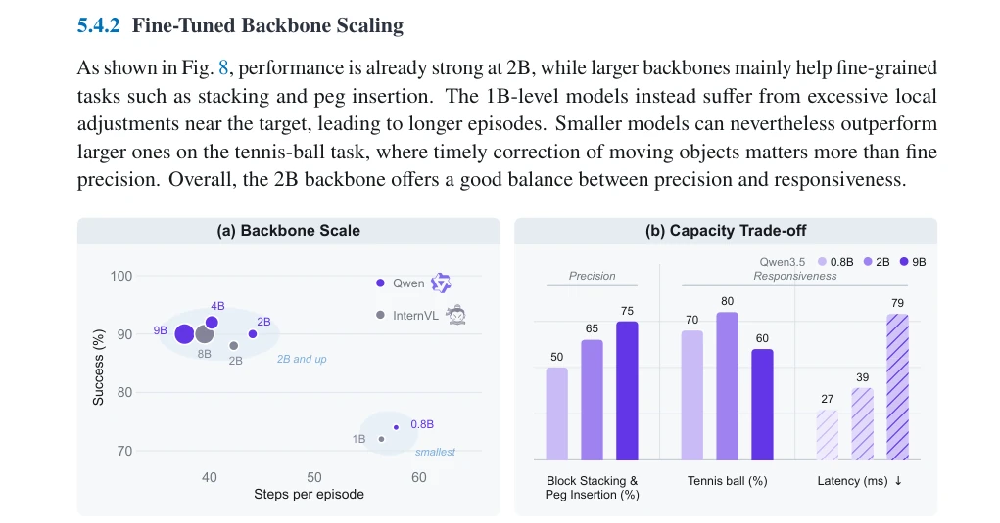
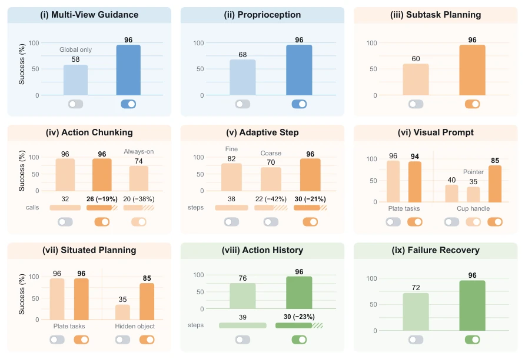
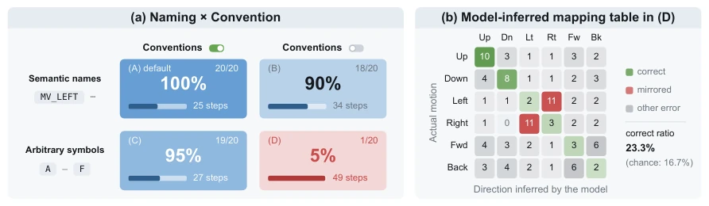

The name Show-Harness is quite ambitious, directly claiming VLM can "play" robots. The core involves discretizing continuous actions into semantic units such as MV_FWD and GRASP, allowing VLM to make direct decisions while the interpreter handles implementation. Zero-shot runs with Gemini, fine-tuning small models is also inexpensive, claiming superiority over pi0 and VLA baselines. Although it sounds promising, essentially it transforms the VLA "black box" into a "white box" interface, relying on interpreter mapping. However, the experiments are indeed strong, showing robust performance across tasks, environments, and morphologies. The drawback is that a fixed action space may limit VLM creativity, and it relies on specific hardware configurations. In short, interface design is indeed key, but do not expect it to solve all physical problems, after all, the physical world is much more complex than the digital world.
Existing VLA models flatten VLM semantic knowledge into opaque continuous action regression, requiring large amounts of specific data fine-tuning [8, 12]. Although hierarchical systems retain semantics, physical execution is mediated by downstream controllers, weakening the direct link between intent and execution [1, 37]. Show-Harness argues that a suitable interface is needed, allowing VLM to directly be responsible for fine-grained physical decisions while maintaining semantic interpretability. This solves the problem of VLM intelligence being difficult to convert into robot behavior, providing a scalable path. Through discrete semantic actions, it retains VLM reasoning capabilities while avoiding VLA overfitting risks, providing a low-cost solution for small model deployment.

Figure 2. Show-Harness connects foundation VLMs to diverse robot embodiments through one semantic action interface, enabling zero-shot control with frontier models and lightweight adaptation of small open models.
Show-Harness adopts a Perception-Reasoning-Action loop architecture. The core is the semantic action interface, containing discrete units such as MV_FWD and GRASP; the VLM outputs semantic actions, which are mapped to robot control commands by a specific interpreter. The architecture includes three-stage plugins: Perception, Reasoning, and Action. The Perception plugin handles multi-view and proprioception, the Reasoning plugin is responsible for sub-task planning and context planning, and the Action plugin handles history records and recovery. GUMI provides a GUI interface for humans and Agents to collect data. It supports two modes: Zero-shot and Fine-tuning. The interpreter ensures actions are safe and compliant with robot morphology, isolating specific control details. This design allows the same interface to adapt to different robots without retraining the model, only requiring a change of interpreter.

Figure 3. The Show-Harness architecture. A modular perceive–reason–act loop connects foundation VLMs to robot control through a shared semantic action interface.

Figure 4. The GUMI interface. GUMI is a GUI-based manipulation interface that enables humans and frontier agents to autonomously collect demonstrations through the same semantic controls.
Tested on Franka and AgileX, compared with pi0, GR00T, etc. Show-Harness performs better across tasks, environments, and robot morphologies. Zero-shot Gemini and fine-tuned Qwen-2B both outperform baselines. Generalization is good. Ablation shows plugins like multi-view guidance and sub-task planning are key. In action space representation, symbols with conventions work best. Sim-to-real is also effective. Experiments show that semantic interfaces can significantly improve generalization, and small model fine-tuning costs are far lower than VLA.

Figure 1. Show-Harness unlocks generalizable embodied manipulation with foundation VLMs across diverse tasks, scenes, and robot embodiments, enabling direct zero-shot deployment with frontier models and capable, efficient control via lightweight adaptation of compact open-source models.

Figure 5. Real-robot rigs.

Figure 6. Capability analysis of Show-Harness across physical (§) and semantic ( ) adaptability.

Figure 7. Effect of frontier VLM choice and thinking effort.

Figure 8. (a) Effect of fine-tuned backbone scaling over the five Plate tasks; bubble area is proportional to parameter count. (b) Three Qwen3.5 capacities across fine-grained tasks.

Figure 9. Plugin ablations on the real Franka arm using Gemini-3.1 Pro as a zero-shot agent.

Figure 10. (a) Ablation on action-space representation. (b) Action mappings inferred under setting (D) over 20 episodes, where the model probes unknown symbols and infers their effects from observation changes.